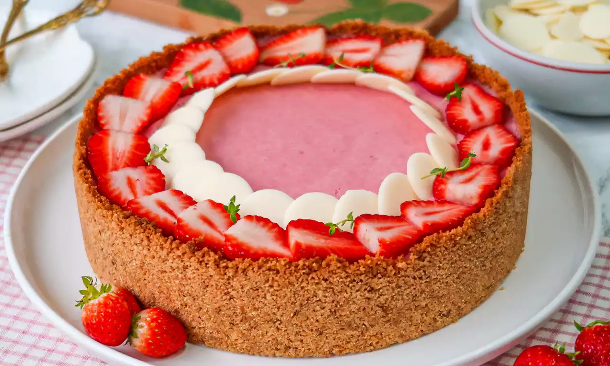

<!DOCTYPE html>
<html>

<head>
  <meta charset="utf-8">
  <meta name="viewport" content="width=device-width">
  <title>torta de morango</title>
  
  <link rel= "stylesheet" href= "style.css">
    
</head>
<body bgcolor="pink">
  
  <script src="script.js"></script>
</body>

</html>


  
   <marquee><h1>Torta De Morango</h1></marquee> 
   teste



<p>
  <iframe width="350" height="250" src="https://www.youtube.com/embed/cAW8qb8yrgU?si=9oz9q0i9vpb7dgFF" title="YouTube video player" frameborder="0" allow="accelerometer; autoplay; clipboard-write; encrypted-media; gyroscope; picture-in-picture; web-share" referrerpolicy="strict-origin-when-cross-origin" allowfullscreen></iframe>
</p>

<h1>massa</h1>
<li>1 pacote de bolacha maisena</li>
<li>1/2 xícara de margarina</li>

<h1>recheio</h1>
<li>700ml de leite</li>
<li>2 colheres de essencia de baunilha</li>
<li>2 gemas peneradas</li>
<li>1 lata de leite condensado</li>
<li>4 colheres de amido de milho</li>
<li>1 lata de creme de leite</li>

<h1>coberura</h1>
<li>2 caixas de morango</li>
<li>1 pacote de gelatina de morango</li>

<h1>modo de preparo</h1>
<h2>massa</h2>
<li>passe os biscoitos pelo processador até virar um afarofa fina</li>
<li>coloque em uma tigela e vá misturando margarina até formar uma massa lisa </li>
<li>forre uma forma de aro removível, asse por mais ou meno 15 minutos</li>
<li>reserve</li>

<h2>recheio</h2>
<li>leve ao fogo o leite, leite condensado, essencia de baunilha, amido de milho e as gemas peneiradas</li>
<li>misture bem, mexa até formar um creme, deixe amornar e junte o creme de leite</li>
<li>coloque o creme na forma por cima da massa já assada</li>
<li>lave bem os morangos e pique em fatias no sentido do comprimento</li>
<li>arrume por cima do creme e reserve</li>
<li>faça a gelatina com 350ml de água, deixe gelar até que fique num aspecto grosso, que escorra da colher e coloque devagar por cima dos morangos</li>
<li>leve a geladeir para acabar de endurecer</li>
<li>desenforme e sirva gelada</li>

<p>
<table>
  <thead>
    <tr>

      <table>
        <thead>
          <tr>
            <th colspan="3">tabela de preços</th>
          </tr>
      </thead>
  
  <th>quanto custa 1kg de torta de morango?</th>
      <th>total</th>
      
      </tr>
    </thead>
  <tbody>
  <tr>
    
    <td>1 x de R$60,00 sem juros</td>
    <td> R$60,00</td>
    
  </tr>

      <tr>
        
         <td>7 x de R$9,83</td>
        <td> R$68,83</td>

      </tr>
      <tr>
    <td>8 x de R$8,72</td>
        <td> R$69,74</td>
    </tr>

    <tr>
    <td>9 x  deR$7,85</td>
      <td>R$70,61</td>
    </tr>
  
    <tr>
    <td>10 x de R$7,12</td>
      <td> R$71,19</td>
    </tr>
    
    </tr>
    </thead>
    </table>

  </tbody>
  </table>

</p>
<h2>outros tipos de torta</h2>
<a href="torta_de_limao.html">torta de limao</a>
<a href="formulario.html">torta de limao</a>
<p>

<a href="encomenda.html">Encomendar pedido</a>
